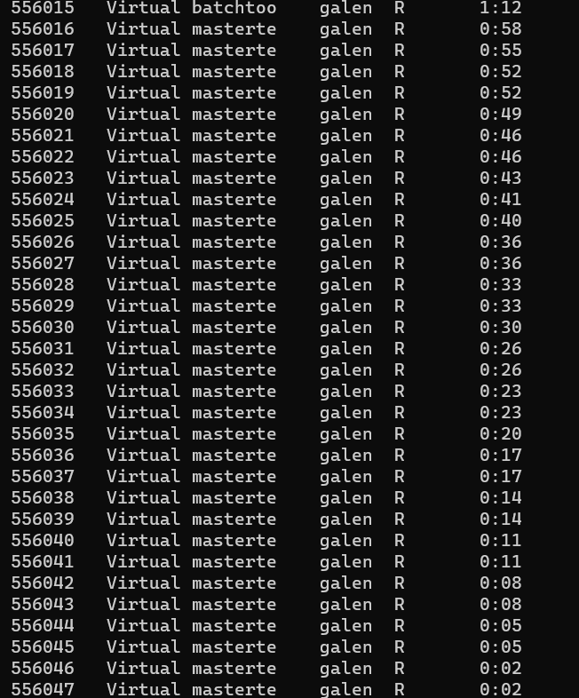
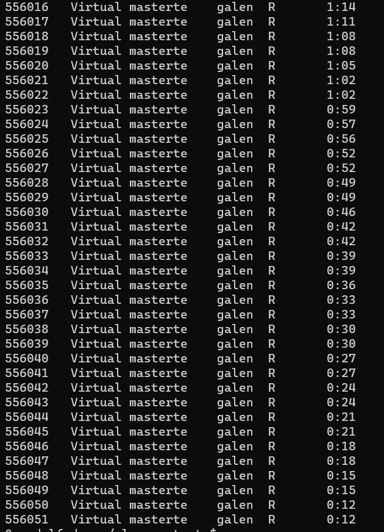
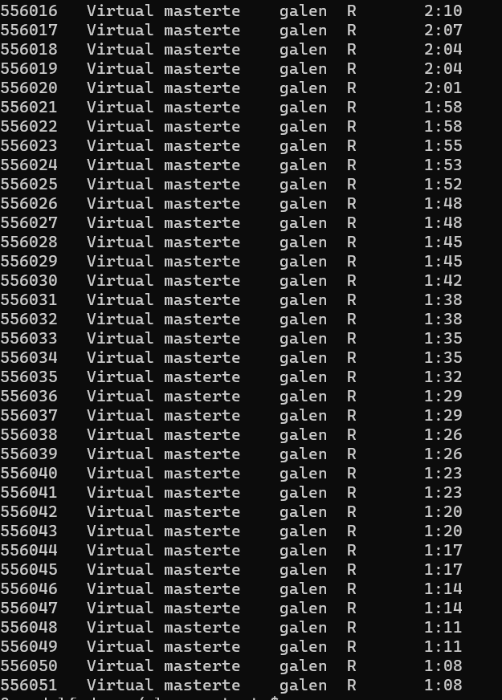

Control process dying or timing out
The issue
The way future.batchtools works there’s a controlling R process that starts the futures and waits for them to return. In typical use, the value() of futures are intended to be used, whereas in some cases, particularly when I use them on the cluster, I’m using them to fire off a bunch of HPC jobs that save output, and don’t care if they return. This is a very similar issue to the discussion here.
There are a couple issues this use-case brings up
What happens if that master R script that creates the futures dies?
Do we need to tie up a core just to run that? (YES)
Does it have to stay in use for the entire period all futures take to finish? (NO- see next)
What if it dies once the jobs have started running vs before they’ve started
e.g. does it create a queue that just runs no matter what? (NO)
once a job starts, does it finish no matter what? (YES, unless it times out)
Does it matter if the master runs through sbatch, sinteractive, or just Rscript on the login node? (Probably not, but
sbatchis likely safest/most robust).Should I actually be using
batchtools::submitJobs()instead, as suggested in that github thread? I really like the automatic control of jobs and globals etc infuture.batchtools, and the ability to be portable to local computers. (Quite possibly, but that’s for another day, I think. And we’d potentially lose a lot of the advantages offuture).
Tests
I want to create some tests that run scripts with future.batchtools, where the master times out (and so quits) before the jobs all finish. And I particularly want to cause the situation where the master dies
Some jobs have finished, others haven’t started
Some jobs have finished, others started but havent finished
No jobs have started, but they’ve been created.
I’ve set up a testing script in the slurm_r_tests repo, master_timeouts.R that will hopefully address some of this by saving files at the start and end of each job. Getting the timings right will be a bit of a crapshoot, since the master will be running while the created jobs sit in a queue.
I think we’ll have to assume the master will create the futures pretty much right away. So then we’ll just check the produced files to see if all the starts and/or all the ends finished. And keep an eye on squeue to see when the master process dies and whether others die then too, or start after that. I think there’ll be some trial and error.
Trial 1
I’m calling it for a 25 * 25 loop, so should be 625 outputs. As a first pass, there were 175 files created in both startdir and enddir, so every loop that started finished, but lots of loops didn’t start. Each loop is fast, so it’s possible all the starts finishing could have happened by chance. The master process did timeout before it finished.
Trial 2
Adding a pause in the loop Sys.sleep(70), so we know the loops shouldn’t finish while the master is still running, because it has --time=0:01:00. Should manage to start a few though.
The master (“batchtoo” in this squeue output) started a bunch of jobs:

Immediately after it died, the job list was

with the last one being 556051
After another minute, those were all still running (or had finished), but no new jobs had been started

Not all the jobs that started finished, but it seems to be because some individual jobs timed out. 108 started, 72 produced their output, and there are 36 (the difference) logs in the .futures folder with timout messages. I wouldn’t have thought they’d take anywhere near that long, but that seems to be the issue.
Conclusions
The master needs to run until all jobs have started, but not necessarily until all jobs have finished (unless it actually does something with the output).
That will be hard to manage, since the time it takes to start jobs depends on SLURM queues.
There’s no reason to use srun or sinteractive- they still need to ask for resources, and die when disconnect, so even more finicky.
Using Rscript on the login node is I guess a potential workaround, but I think it also dies when we disconnect and potentially times out anyway. It’s still tying up a node, just in a different place. I think that’d make people even grumpier. It’s also hard to test with short-ish runs.